قم بإعادة الرسم المطلوب عن طريق وضع الأوامر الموجودة بالأسفل بشكل صحيح. سوف يتم تكرار تلك الأوامر مرات
|
|
|
ضع الأوامر هنا
|
الأوامر
|
نتيجة عمل البرنامج
تم تنفيذ الأوامر مرات |
|
قيمة "س" الحالية هي 1.
|
||
On commence par repérer le motif qui est répété 6 fois. Il est encadré en rouge ci-dessous.
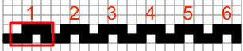
On regarde alors de plus près ce motif, afin de décomposer les déplacements.
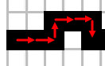
On cherche alors les instructions qui correspondent aux déplacements. On obtient alors la solution :
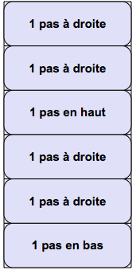
On commence par repérer le motif qui est répété. Les 4 flèches rouges correspondent à la première répétition du motif. Les 4 flèches bleues correspondent à la seconde répétition.
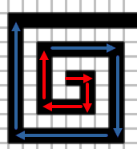
On étudie alors la composition du motif.
On observe que le motif répété consiste à aller dans chacune des 4 directions (droite, bas, gauche, haut), en augmentant de une unité à chaque fois le nombre de pas effectués. On va donc utiliser l'instruction « augmenter N » entre chaque déplacement. Le solution est ainsi :
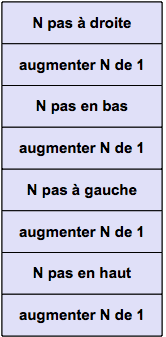
Voici trois solutions, assez différentes les unes des autres.
Première solution
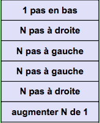 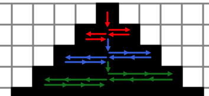
Deuxième solution
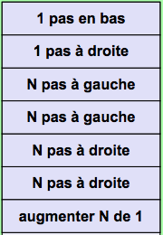 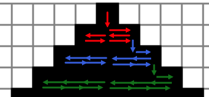
Troisième solution
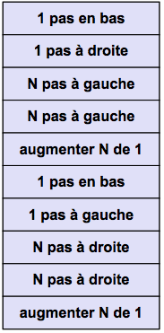 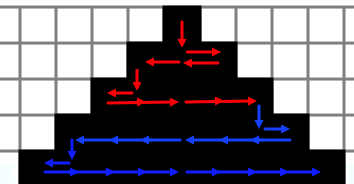
Notez que dans la troisième solution, seules 6 répétitions sont nécessaires pour compléter le dessin.
Dans ce sujet, il faut écrire un programme en utilisant des instructions. Ces instructions seront répétées de manière systématique. La faculté de répéter une opération un grand nombre de fois sans se lasser est le point fort des ordinateurs !
Certaines des instructions proposées dépendent de la valeur de la variable nommée N. On l'appelle « variable » car justement sa valeur peut varier au cours de l'exécution du programme.
L'utilisation de variables permet d'écrire des programmes beaucoup plus intéressants, car plus génériques, que ce que l'on pourrait obtenir sans.